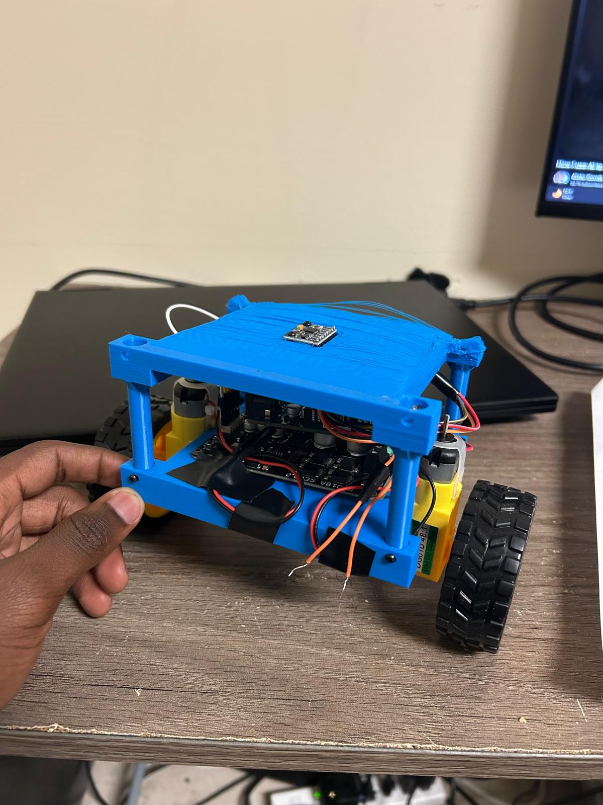

CONTROL SYSTEMS • ROBOTICS
Inverted Pendulum Control System
Developed a two-wheeled self-balancing robot that uses sensor feedback, embedded control, and motor actuation to maintain an upright position despite the system's natural instability.
Personal Project
Design, Modeling & Control
MATLAB, Arduino
August 2026

01
Project Overview
This project focuses on the development of a two-wheeled self-balancing robot. Because the robot's center of mass is positioned above the wheel axle, the upright configuration is naturally unstable and requires continuous corrective motion to maintain balance.
The robot uses sensor measurements to estimate its orientation and a feedback controller to determine how the wheels should move in response to changes in body angle. The project combines mechanical design, sensing, embedded programming, motor actuation, and feedback control in a single mechatronic system.
02
Design Objectives
- Design and construct a two-wheeled robot capable of balancing about its wheel axle.
- Measure the robot's orientation using onboard sensor feedback.
- Implement a real-time feedback controller on a microcontroller.
- Control the wheel motors to correct deviations from the upright position.
- Experimentally tune the controller to improve balancing behavior.
- Evaluate the physical limitations of the robot and identify areas for future improvement.
03
System Design
The self-balancing robot uses a closed-loop feedback system to maintain its body near the upright position. An MPU6050 inertial measurement unit is used to determine the robot's roll angle, while an Arduino processes the measured angle and executes the PID control algorithm. The resulting control signal is sent to a Cytron MDD10A dual-channel motor driver, which drives the two DC motors.

3.1 Orientation Measurement
An MPU6050 inertial measurement unit was used to obtain the roll angle of the robot. The upright position was defined as a desired angle of 0°. The measured roll angle therefore indicates how far the robot has tilted away from its desired vertical orientation.
3.2 Feedback Error
The measured roll angle was compared with the desired upright angle to generate the feedback error used by the controller:
Since the desired orientation was 0°, the magnitude and sign of the error represented both the amount and direction of the robot's tilt.
3.3 PID Control
The angular error was supplied to a PID controller running on the Arduino. The controller calculated the corrective motor command based on the current error, accumulated error, and rate of change of the error.
The resulting controller output determined the PWM command and motor direction required to oppose the direction in which the robot was falling.
3.4 Motor Driver and Corrective Motion
The Arduino sent the calculated PWM and direction commands to a Cytron MDD10A dual-channel DC motor driver. The motor driver supplied power to the two DC motors, causing the wheels to accelerate in the direction required by the controller.
By driving the wheels toward the direction of the fall, the wheel contact point was moved beneath the robot's center of mass. This produced the corrective motion required to oppose the falling motion and restore the robot toward its upright position.
04
Control Concept
The upright position of the robot is naturally unstable because its center of mass is located above the wheel axle. When the body begins to tilt away from the vertical position, gravity causes the tilt to increase unless corrective wheel motion is generated.
The desired balancing angle was defined as 0°. The controller compared the measured roll angle with this reference to determine the balance error:
The sign of the error indicates the direction in which the robot is tilting, while its magnitude indicates how far the body has moved from the upright position.
To correct the tilt, the wheels are driven in the direction of the fall. This moves the wheel contact point beneath the robot's center of mass and produces the corrective motion required to restore the body toward the upright position.
05
Orientation Measurement
An MPU6050 inertial measurement unit was used to determine the roll angle of the robot. The measured roll angle represented the orientation of the robot body relative to its desired upright position.
The angle measurement was continuously read by the Arduino and used as the feedback variable for the balancing controller. With the desired angle set to 0°, any positive or negative deviation represented a tilt that required corrective motor action.
This measurement formed the connection between the physical motion of the robot and the feedback-control algorithm running on the microcontroller.
06
Controller Implementation & Tuning
A PID controller was implemented on the Arduino to generate the corrective motor command required for balancing. The controller used the difference between the measured roll angle and the desired upright angle as its input.
The resulting controller output determined both the direction and magnitude of the motor command. The Arduino generated a PWM signal, which was sent to the Cytron MDD10A motor driver to control the two DC motors.
The PID gains were tuned experimentally by adjusting the proportional, integral, and derivative terms while observing the robot's balancing behavior. The response was evaluated based on how quickly the robot corrected its tilt, whether excessive oscillation occurred, and whether the robot was able to remain near the upright position.
07
Experimental Testing & Results
The completed self-balancing robot was tested experimentally using the PID controller and MPU6050 orientation feedback. During testing, the controller continuously adjusted the wheel motion in response to changes in the measured roll angle in an attempt to maintain the robot near the desired upright position.
7.1 Balancing Demonstration
The video below shows the physical robot operating under closed-loop control. As the robot begins to tilt, the controller drives the wheels in the direction of the fall to generate corrective motion and maintain balance.
09
Challenges & Engineering Decisions
One of the main challenges was obtaining an orientation measurement that was sufficiently responsive and stable for real-time balancing. Because the controller depends directly on the measured roll angle, variations or noise in the sensor measurement could cause unnecessary motor corrections and contribute to oscillatory behavior.
PID tuning was also performed experimentally. Increasing the controller gains could improve the speed of correction, but overly aggressive gains could cause the robot to oscillate or respond too strongly to small changes in angle. The final tuning therefore required balancing response speed with stability.
The project also demonstrated the importance of motor response, mechanical construction, sensor placement, and electrical integration. Unlike an ideal simulation, the physical robot introduced effects such as motor limitations, sensor noise, friction, and structural behavior that influenced the balancing performance.
10
Future Improvements
A future iteration of the project will focus on improving both the experimental measurement process and the control-system design.
10.1 Dedicated Onboard Power Supply
A future improvement would be to power the robot using a dedicated onboard battery rather than relying on external power and communication cables during operation. During testing, the wires connected to the computer and power supply occasionally interfered with the motion of the robot and could physically disturb the balancing system.
Using an onboard battery would remove these external disturbances, allow the robot to move more freely, and provide a more realistic evaluation of the controller's balancing performance.
10.2 Experimental Data Recording
Future experiments will record the complete time history of the roll angle, controller output, and motor commands. Saving this numerical data would allow the balancing response to be evaluated quantitatively rather than primarily through visual observation.
10.3 Dynamic Modeling and Simulation
A more accurate dynamic model of the physical robot could be developed using the measured mass distribution, wheel geometry, motor characteristics, and rotational inertia of the system. The model could then be implemented in simulation and compared with the behavior of the physical robot.
10.4 State-Space and Model-Based Control
The robot could also be represented using a state-space model containing variables such as body angle, angular velocity, wheel position, and wheel velocity. This would allow controllers such as state-feedback or LQR to be investigated and compared with the experimentally tuned PID controller.
10.5 Quantitative Performance Analysis
Recorded experimental data could be used to evaluate metrics such as maximum angular deviation, recovery time after a disturbance, steady balancing error, and the magnitude of the required motor command.
Project Resources
View Code on GitHub View Report11
What I Learned
This project provided practical experience controlling a naturally unstable physical system using real-time sensor feedback. I gained experience integrating an inertial measurement unit, Arduino microcontroller, motor driver, DC motors, and a PID controller into a complete mechatronic system.
The project also demonstrated how strongly physical implementation affects control-system performance. Sensor measurements, controller tuning, motor response, and mechanical construction all influence whether the robot can maintain balance.
The experience motivated further study of dynamic modeling, state-space methods, sensor fusion, and model-based controller design so that future versions of the robot can be designed and evaluated more systematically.